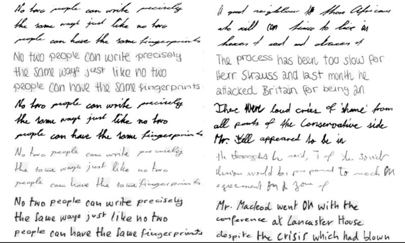

Google berencana akan melakukan PHK terhadap karyawan. Google pun akan menggantinya dengan kecerdasan buatan (AI).
Jakarta - Perusahaan teknologi seperti OpenAI dan Google berlomba-lomba mengembangkan kecerdasan buatan (AI) yang semakin canggih dan pintar. Di sisi lain, ilmuwan mengkhawatirkan perkembangan AI yang berpotensi merugikan manusia.
Jakarta - Pelindungan data pribadi pada hakikinya termasuk hak asasi manusia.Oleh sebabnya pemerintah di berbagai belahan dunia telah menetapkan Undang-Undang Pelindungan Data Pribadi, Teknologi berkembang dengan sangat pesat dan saat ini memasuki era kecerdasan buatan, mendorong diperlukannya regulasi yang mengaturnya agar proses pelindungan data pribadi dapat terus berjalan sebagaimana mestinya. Eropa akhirnya mempunyai Undang-Undang Kecerdasan Buatan (AI Act) yang diajukan pada 2021.
Bali - Penggunaan artificial intelligence (AI) kini sudah merambah ke dalam banyak aspek. Bahkan, studi terbaru mengungkap fitur AI berpotensi dapat memperkirakan kematian seseorang. Dalam sebuah jurnal berjudul "Using Sequences of Life-events to Predict Human Lives" yang ditulis oleh Sune Lehmann, seorang profesor di Technical University of Denmark, melaporkan AI dapat menentukan angka harapan hidup seseorang dengan akurasi hampir 80%. Dalam mengkaji fungsi AI untuk menentukan harapan hidup ini, Lenhmann mengumpulkan catatan harian dari 6 juta penduduk di Denmark. Catatan tersebut berisi data-data responden salam satu dekade terkait pendapatan, kesehatan, tempat tinggal, dan lainnya.Pengkajian Lewat Model life2vec Pengujian tersebut dilakukan lewat sebuah model pembelajaran yang diberi nama life2vec. Lewat model tersebut, Lenhmann memetakan urutan peristiwa kehidupan dari responden. Kemudian, model dilatih untuk mempelajari pola dalam data dan memprediksi hasil seperti kepribadian dan waktu kematian dengan akurasi tinggi. "Untuk menguji seberapa bagus life2vec, kami memilih sekelompok 100.000 individu yang setengahnya bertahan hidup dan setengahnya lagi mati," kata Lenhmann kepada CNN, dikutip dari Business Insider, Senin (25/1/2024).
Adapun peserta uji coba memiliki rentang usia 30-55 tahun. Mereka juga memetakan detail responden secara lebih subjektif misalnya dengan memasukan data ciri-ciri kepribadian. Dikutip dari Neuroscience News, Lenhmann menemukan bahwa individu yang memiliki posisi kepemimpinan atau memiliki pendapatan tinggi memiliki kemungkinan lebih besar untuk bertahan hidup. Selain itu, hasil studi menunjukkan laki-laki, berketerampilan, atau memiliki diagnosis mental dikaitkan dengan risiko kematian yang lebih tinggi.
menerbitkan Surat Edaran Etika Penggunaan Kecerdasan Buatan yang diharapkan dapat menjadi pedoman etika dalam pengembangan dan pemanfaatan AI di Indonesia.
Aplikasi berbasis artificial intelligence (AI) atau kecerdasan buatan seperti ChatGPT dapat membuat draf surat, artikel, bahkan memberikan nasihat hukum, namun hanya dalam bentuk teks yang terkomputerisasi. Kini, para ilmuwan menciptakan AI yang dapat meniru tulisan tangan manusia. Hebatnya, hasil 'tulisan tangan' AI ini hampir tidak bisa dibedakan dengan hasil karya tangan manusia yang sebenarnya.
Tidak percaya? Coba lihat gambar di bawah ini. Pada gambar, terlihat ada dua kolom tulisan tangan hasil AI dan kolom lainnya ditulis oleh manusia. Bisakah kalian temukan mana yang ditulis AI?
Kalau kalian menebak kolom kiri ditulis oleh AI dan kolom kanan ditulis oleh manusia, kalian benar! Kolom kanan adalah contoh tulisan tangan dari enam penulis manusia berbeda yang dilatih oleh tim AI. Sedangkan kolom kiri merupakan tiruan tulisan tangan masing-masing orang oleh AI baru yang disebut HWT. HWT dikembangkan oleh para ilmuwan di Mohamed bin Zayed University of Artificial Intelligence(MBZUAI) di Abu Dhabi, Uni Emirat Arab. Menurut para ahli, 'tulisan tangan' yang dihasilkan oleh HWT terlihat jauh lebih realistis dibandingkan AI lain yang sudah ada. Dalam penelitiannya, mereka menunjukkan tulisan hasil HWT dan dua teknologi AI pembuat tulisan tangan lainnya kepada 100 orang dan menanyakan mana yang mereka sukai. Hasilnya menunjukkan bahwa 81% peserta lebih memilih hasil HWT dibandingkan AI pembuat teks lainnya. Terlebih lagi, para peserta tidak bisa membedakan tulisan tangan yang ditiru dengan tulisan tangan sebenarnya. Pendekatan sebelumnya untuk meniru tulisan tangan seseorang telah dikembangkan menggunakan model pembelajaran mesin yang disebut generative adversarial network (GAN).
Para ilmuwan mengemukakan bahwa manusia dapat lebih cepat memproses informasi baru ketimbang AI. Jakarta - Pengembangan kecerdasan buatan alias artificial intelligence (AI) dilakukan besar-besaran. Berbagai tokoh teknologi dunia seperti Elon Musk pun menyambut hal ini dengan sangat antusias. Di tengah kehebohan soal AI, muncul kekhawatiran bahwa AI akan menggantikan peranan manusia di berbagai aspek. Namun, sejumlah ilmuwan meyakini bahwa AI bukan lawan sepadan manusia. Melansir The Sun, beberapa ilmuwan mengatakan manusia dapat lebih cepat memproses informasi baru ketimbang AI. Ini dikaitkan dengan 'area abu-abu' atau dikenal dengan grey matter yang dimiliki manusia.
Jakarta - OpenAI sebelumnya memiliki kebijakan yang melarang teknologinya digunakan untuk tujuan militer dan perang. Tapi sepertinya kebijakan itu diam-diam diubah dan OpenAI mulai mengizinkan militer untuk menggunakan teknologinya. Menurut laporan The Intercept, OpenAI telah memperbarui kebijakannya pada 10 Januari lalu. Sebelumnya kebijakan OpenAI melarang teknologinya digunakan untuk aktivitas yang bisa melukai atau merusak secara fisik, termasuk untuk tujuan militer dan perang. Kini tulisan deskripsi 'militer dan perang' dihilangkan dari halaman kebijakan OpenAI. Namun kebijakan baru OpenAI tetap melarang teknologinya digunakan untuk mengembangkan atau menggunakan senjata serta melukai orang lain.